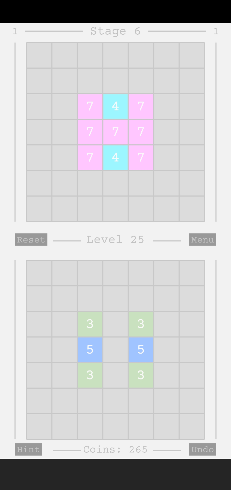
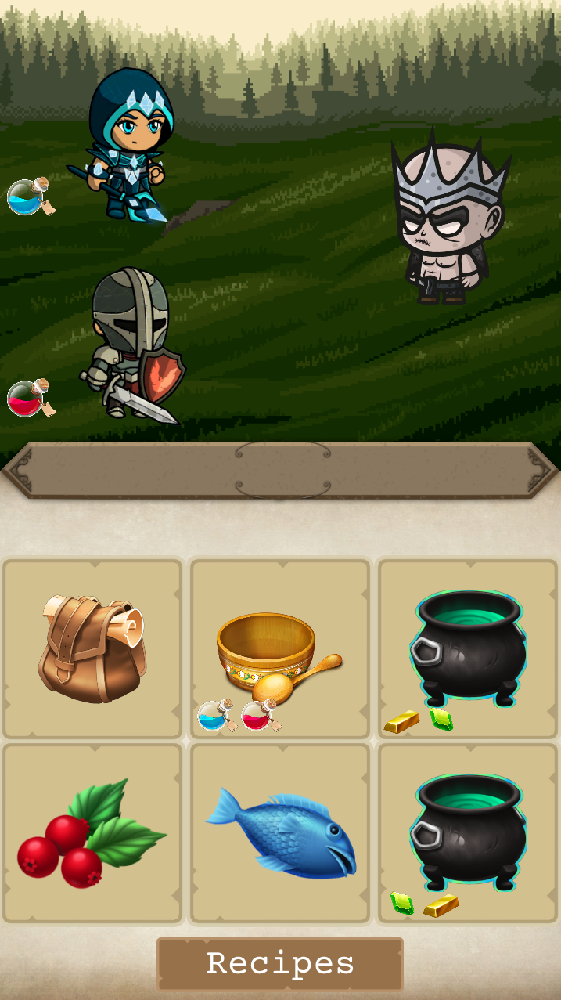
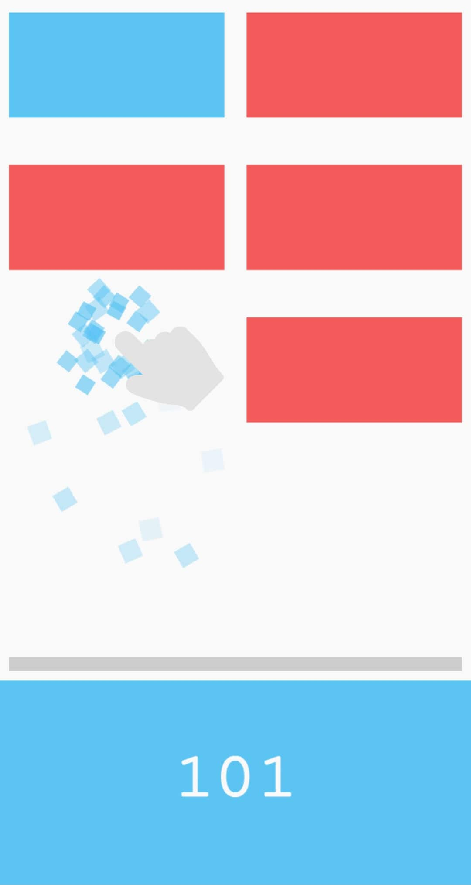
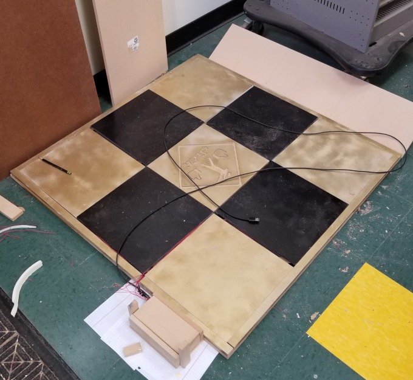
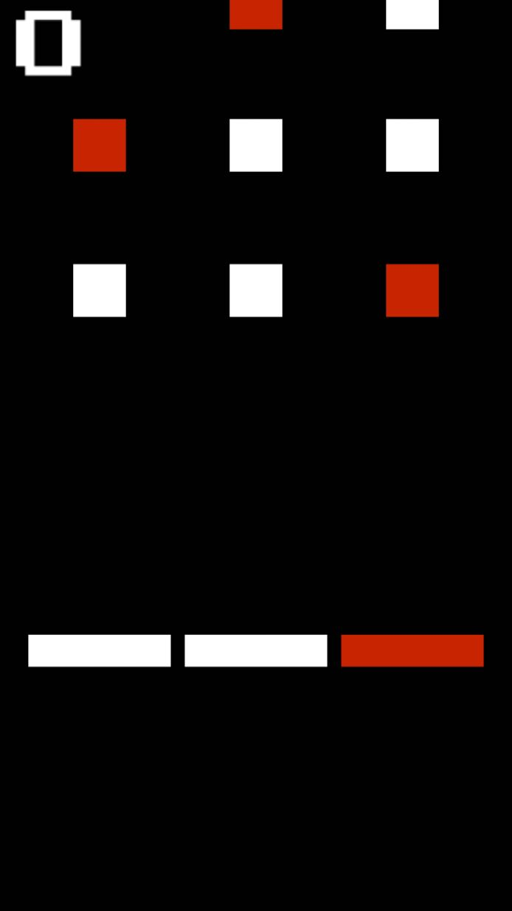
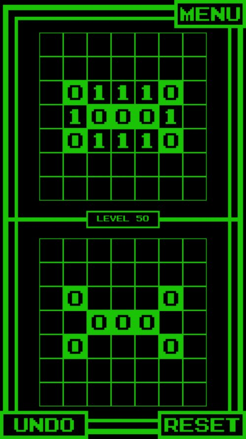
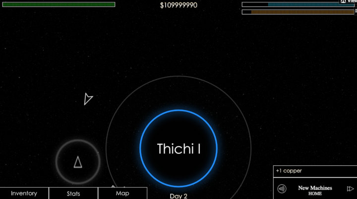
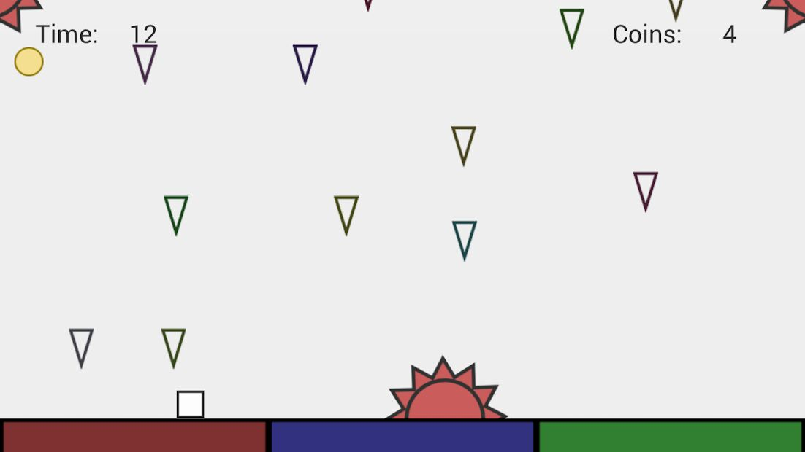
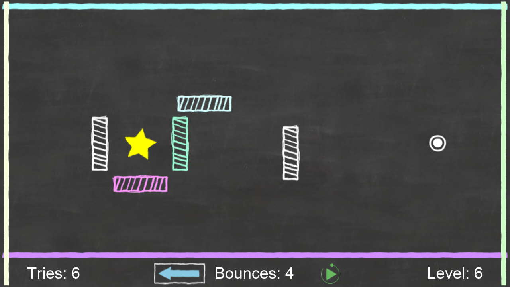

{kind=link}
{kind=link}
{kind=link}
{kind=link}
{kind=link}
{kind=link}
Games
I always enjoyed video-games growing up, so as my passion for coding grew, I naturally started using it to create the things I enjoyed. From puzzle to dancing to open-world games, my games are listed below.



{kind=link}
Eight Colors: Logic Puzzles (2020)
A spinoff of Binary Hacker with a more colorful pastel theme and 700 levels. Different rules of the game allows the puzzles to be much more complex. Created using JavaScript, Phaser, and Cordova.

{kind=link}
I Am The Support (2020)
I Am The Support is a game made for the Roll for Hacking hackathon in two days. In this game players play as the strictly support role of crafting potions for your party as they fight a monster. Party members will request different potions and it is up to you to fulfill their requests. Succeed and your team members will be able to fight and defeat the monster. Fail and so does your team. Created in Unity using C#.
View Devpost{kind=link}

{kind=link}
Red Blue: Color Clicker (2019)
This game is an unique casual mobile game in which the player must actively tap the correctly-colored blocks while simultaneously changing their color before the blocks reach the bottom. Created using JavaScript, Phaser, and Cordova.

{kind=link}
Dancey Dancey Revolution (2018)
This dancepad was a custom project I co-created for my high-school engineering class. We coded an Arduino to accept presses on our handmade DDR board and convert them into keyboard left, right, up, and down presses. We then coded a custom DDR-styled game using JavaScript, so that any computer could plug in the Arduino dancepad and play.
View Presentation

{kind=link}
Firewall (2017)
A casual game in which players change whether a gate accepts or rejects packets trying to reject bad packets and accept good packets. Created using JavaScript, Phaser, and Cordova

{kind=link}
Binary Hacker (2016)
A puzzle game in which players try to preplan how to duplicate a grid of numbers using a unique set of rules. Created using JavaScript, Phaser, and Cordova.

{kind=link}
Open Space (2016)
Open Space is a prototype 2D open-world space game I developed. This is the most complicated game I have created, with quests, recruitment, trading, mining and an in-game radio streamed from SoundCloud implemented.
Watch Gameplay | Play Demo

{kind=link}
iSurvive (2015)
iSurvive was a game I created Freshman year of high school. I created this game using Lua and the former Corona SDK.
Watch Gameplay

{kind=link}
Chalkboard Bounce (2015)
One of the first games I published. This prototype game had players try to direct the path of a ball in the midst of obstacles. Created using Lua and the former Corona SDK (now Solar2D)
Watch Gameplay